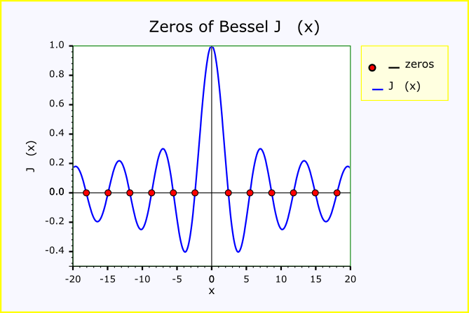

|
Home | Libraries | People | FAQ | More |


#include <boost/math/special_functions/bessel.hpp>
Functions for obtaining both a single zero or root of the Bessel function,
and placing multiple zeros into a container like std::vector
by providing an output iterator.
The signature of the single value functions are:
template <class T> T cyl_bessel_j_zero(T v, // Floating-point value for Jv. int m); // 1-based index of zero. template <class T> T cyl_neumann_zero(T v, // Floating-point value for Jv. int m); // 1-based index of zero.
and for multiple zeros:
template <class T, class OutputIterator> OutputIterator cyl_bessel_j_zero(T v, // Floating-point value for Jv. int start_index, // 1-based index of zero. unsigned number_of_zeros, OutputIterator out_it); // template <class T, class OutputIterator> OutputIterator cyl_neumann_zero(T v, // Floating-point value for Jv. int start_index, // 1-based index of zero. unsigned number_of_zeros, OutputIterator out_it); //
There are also versions which allows control of the Policies for error handling and precision.
template <class T> T cyl_bessel_j_zero(T v, // Floating-point value for Jv. int m, // 1-based start index. const Policy& pol); // Policy template <class T> T cyl_neumann_zero(T v, // Floating-point value for Jv. int m, // 1-based start index. const Policy& pol); // Policy template <class T, class OutputIterator, class Policy> OutputIterator cyl_bessel_j_zero(T v, // Floating-point value for Jv. int start_index, // 1-based start index. unsigned number_of_zeros, OutputIterator out_it, const Policy& pol); template <class T, class OutputIterator, class Policy> OutputIterator cyl_neumann_zero(T v, // Floating-point value for Jv. int start_index, // 1-based start index. unsigned number_of_zeros, OutputIterator out_it, const Policy& pol);
The zeros or roots (values of x where the function crosses the y = 0 axis)
of the Bessel and Neumann functions are computed by two functions, cyl_bessel_j_zero and cyl_neumann_zero.
In each case the index of the zero returned is 1-based, which is to say:
cyl_bessel_j_zero(v, 1);
returns the first zero of Bessel J, and
cyl_bessel_j_zero(v, 0);
results in a domain_error being raised.

This example demonstrates calculating zeros of the Bessel, Neumann and Airy functions. It also shows how Boost.Math and Boost.Multiprecision can be combined to provide a many decimal digit precision. For 50 decimal digit precision we need to include
#include <boost/multiprecision/cpp_dec_float.hpp>
and a typedef for float_type may be convenient (allowing
a quick switch to re-compute at built-in double
or other precision)
typedef boost::multiprecision::cpp_dec_float_50 float_type;
To use the functions for finding zeros of the functions we need
#include <boost/math/special_functions/bessel.hpp>
This file includes the forward declaration signatures for the zero-finding functions:
// #include <boost/math/special_functions/math_fwd.hpp>
but more details are in the full documentation, for example at Boost.Math Bessel functions
This example shows obtaining both a single zero of the Bessel function,
and then placing multiple zeros into a container like std::vector
by providing an iterator. The signature of the single value function is:
template <class T> inline typename detail::bessel_traits<T, T, policies::policy<> >::result_type cyl_bessel_j_zero(T v, // Floating-point value for Jv. int m); // start index.
The result type is controlled by the floating-point type of parameter
v (but subject to the usual
precision policy
and internal
promotion policy).
The signature of multiple zeros function is:
template <class T, class OutputIterator> inline OutputIterator cyl_bessel_j_zero(T v, // Floating-point value for Jv. int start_index, // 1-based start index. unsigned number_of_zeros, OutputIterator out_it); // iterator into container for zeros.
There is also a version which allows control of the Policies for error handling and precision.
template <class T, class OutputIterator, class Policy> inline OutputIterator cyl_bessel_j_zero(T v, // Floating-point value for Jv. int start_index, // 1-based start index. unsigned number_of_zeros, OutputIterator out_it, const Policy& pol); // iterator into container for zeros.
![[Tip]](../../../../../../../../doc/src/images/tip.png) |
Tip |
|---|---|
It is always wise to place code using Boost.Math inside try'n'catch blocks; this will ensure that helpful error messages can be shown when exceptional conditions arise. |
First, evaluate a single Bessel zero.
The precision is controlled by the float-point type of template parameter
T of v
so this example has double
precision, at least 15 but up to 17 decimal digits (for the common 64-bit
double).
double root = boost::math::cyl_bessel_j_zero(0.0, 1); // Displaying with default precision of 6 decimal digits: std::cout << "boost::math::cyl_bessel_j_zero(0.0, 1) " << root << std::endl; // 2.40483 // And with all the guaranteed (15) digits: std::cout.precision(std::numeric_limits<double>::digits10); std::cout << "boost::math::cyl_bessel_j_zero(0.0, 1) " << root << std::endl; // 2.40482555769577
But note that because the parameter v
controls the precision of the result, v
must be a floating-point type. So if you
provide an integer type, say 0, rather than 0.0, then it will fail to compile
thus:
root = boost::math::cyl_bessel_j_zero(0, 1);
with this error message
error C2338: Order must be a floating-point type.
Optionally, we can use a policy to ignore errors, C-style, returning some value perhaps infinity or NaN, or the best that can be done. (See user error handling).
To create a (possibly unwise!) policy that ignores all errors:
typedef boost::math::policies::policy< boost::math::policies::domain_error<boost::math::policies::ignore_error>, boost::math::policies::overflow_error<boost::math::policies::ignore_error>, boost::math::policies::underflow_error<boost::math::policies::ignore_error>, boost::math::policies::denorm_error<boost::math::policies::ignore_error>, boost::math::policies::pole_error<boost::math::policies::ignore_error>, boost::math::policies::evaluation_error<boost::math::policies::ignore_error> > ignore_all_policy; double inf = std::numeric_limits<double>::infinity(); double nan = std::numeric_limits<double>::quiet_NaN(); double dodgy_root = boost::math::cyl_bessel_j_zero(-1.0, 1, ignore_all_policy()); std::cout << "boost::math::cyl_bessel_j_zero(-1.0, 1) " << dodgy_root << std::endl; // 1.#QNAN double inf_root = boost::math::cyl_bessel_j_zero(inf, 1, ignore_all_policy()); std::cout << "boost::math::cyl_bessel_j_zero(inf, 1) " << inf_root << std::endl; // 1.#QNAN double nan_root = boost::math::cyl_bessel_j_zero(nan, 1, ignore_all_policy()); std::cout << "boost::math::cyl_bessel_j_zero(nan, 1) " << nan_root << std::endl; // 1.#QNAN
Another version of cyl_bessel_j_zero
allows calculation of multiple zeros with one call, placing the results
in a container, often std::vector.
For example, generate five double
roots of Jv for integral order 2.
As column J2(x) in table 1 of Wolfram Bessel Function Zeros.
unsigned int n_roots = 5U; std::vector<double> roots; boost::math::cyl_bessel_j_zero(2.0, 1, n_roots, std::back_inserter(roots)); std::copy(roots.begin(), roots.end(), std::ostream_iterator<double>(std::cout, "\n"));
Or generate 50 decimal digit roots of Jv for non-integral order v=71/19.
We set the precision of the output stream and show trailing zeros to display a fixed 50 decimal digits.
std::cout.precision(std::numeric_limits<float_type>::digits10); // 50 decimal digits. std::cout << std::showpoint << std::endl; // Show trailing zeros. float_type x = float_type(71) / 19; float_type r = boost::math::cyl_bessel_j_zero(x, 1); // 1st root. std::cout << "x = " << x << ", r = " << r << std::endl; r = boost::math::cyl_bessel_j_zero(x, 20U); // 20th root. std::cout << "x = " << x << ", r = " << r << std::endl; std::vector<float_type> zeros(3); // Space for 3 roots. boost::math::cyl_bessel_j_zero(float_type(71) / 19, 1, unsigned(zeros.size()), zeros.begin()); // Print the roots to the output stream. std::copy(zeros.begin(), zeros.end(), std::ostream_iterator<float_type>(std::cout, "\n"));
The Neumann function zeros are evaluated very similarly:
using boost::math::cyl_neumann_zero; std::cout << "cyl_neumann_zero(2., 1) = " << cyl_neumann_zero(2., 1) << std::endl; std::vector<float> nzeros(3); // Space for 3 zeros. cyl_neumann_zero(2.F, 1, unsigned(nzeros.size()), nzeros.begin()); // Print the zeros to the output stream. std::copy(nzeros.begin(), nzeros.end(), std::ostream_iterator<float>(std::cout, "\n")); std::cout << cyl_neumann_zero(static_cast<float_type>(220)/100, 1) << std::endl; // 3.6154383428745996706772556069431792744372398748422
Finally we show how the output iterator can be used to compute a sum of zeros.
(See Ian N. Sneddon, Infinite Sums of Bessel Zeros, page 150 equation 40).
We use the cyl_bessel_j_zero
output iterator parameter out_it
to create a sum of 1/zeros2 by defining a custom output iterator:
template <class T> struct output_summation_iterator { output_summation_iterator(T* p) : p_sum(p) {} output_summation_iterator& operator*() { return *this; } output_summation_iterator& operator++() { return *this; } output_summation_iterator& operator++(int) { return *this; } output_summation_iterator& operator = (T const& val) { *p_sum += 1./ (val * val); // Summing 1/zero^2. return *this; } private: T* p_sum; };
The sum is calculated for many values, converging on the analytical exact
value of 1/8.
using boost::math::cyl_bessel_j_zero; double nu = 1.; double sum = 0; output_summation_iterator<double> it(&sum); // sum of 1/zeros^2 cyl_bessel_j_zero(nu, 1, 10000, it); double s = 1/(4 * (nu + 1)); // 0.125 = 1/8 is exact analytical solution. std::cout << std::setprecision(6) << "nu = " << nu << ", sum = " << sum << ", exact = " << s << std::endl; // nu = 1.00000, sum = 0.124990, exact = 0.125000
Examples below show effect of 'bad' arguments that throw a domain_error exception.
try { // Try a negative order v. float dodgy_root = boost::math::cyl_bessel_j_zero(-1.F, 1); std::cout << "boost::math::cyl_bessel_j_zero(-1.F, 1) " << dodgy_root << std::endl; // Throw exception Error in function boost::math::cyl_bessel_j_zero<double>(double, int): // Order argument is -1, but must be >= 0 ! } catch (std::exception ex) { std::cout << "Throw exception " << ex.what() << std::endl; }
![[Note]](../../../../../../../../doc/src/images/note.png) |
Note |
|---|---|
The type shown is the type after promotion,
using precision
policy and internal
promotion policy, from |
In this example the promotion goes:
float and
int.
int "as if"
it were a double, so arguments
are float and double.
double
- so that's the precision we want (and the type that will be returned).
long
double for full double precision.
See full code for other examples that promote from double
to long double.
The full code (and output) for this example for Bessel cyl_bessel_j_zeros
is at Bessel, Neumann
and Airy zeros.
The method uses Newton-Raphson method starting with McMahon's approximation. See "Handbook of Mathematical Functions", M. Abramowitz and I. A. Stegan, section 9.5. Also: NIST Digital Library of Mathematical Functions, Bessel Function Zeros.
The precision of evaluation of zeros was tested at 50 decimal digits using
cpp_dec_float_50 and found
identical with spot values computed by Wolfram
Alpha.